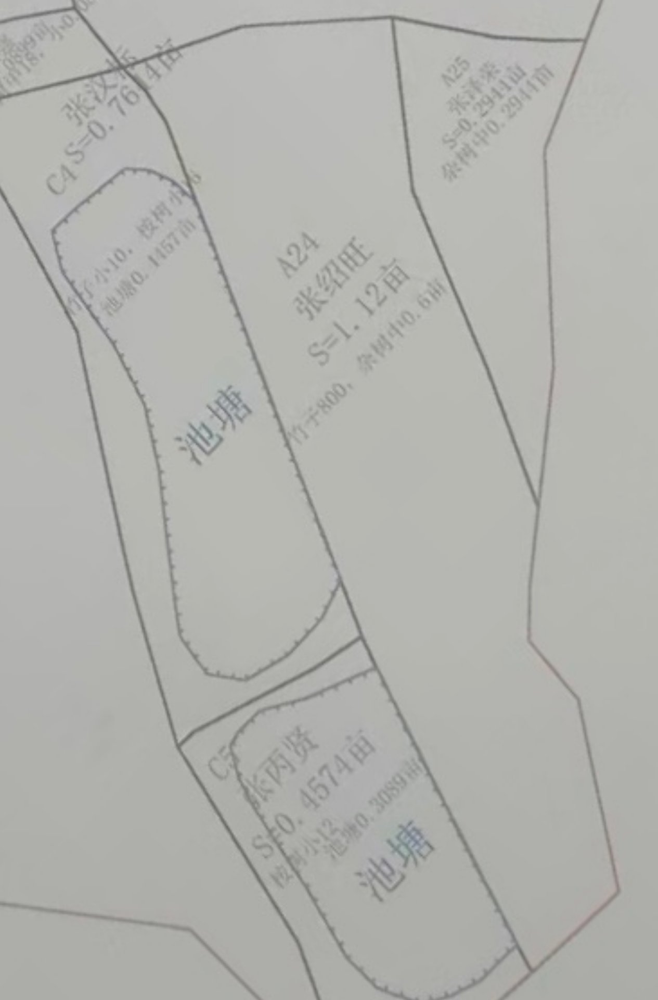

A24 地块面积计算器
原图底图 · 手动描边 · 网格计算
✏️ 开始描边
↩ 撤销
✅ 完成描边
🗑️ 清空
🔲 显示网格
总面积（亩）
描点
0
总格数
0
选中格
0
选中面积
0.000亩
0.0㎡

点击图片描出 A24 边界
双击或点击起点闭合
📐 比例填充
60/40
65/35
70/30
/
应用
当前占比
--%
A区:
0
格 B区:
0
格
A区面:
0.000亩
B区面:
0.000亩
A区
B区
第一步：点击「开始描边」，在图上点出 A24 的边界线